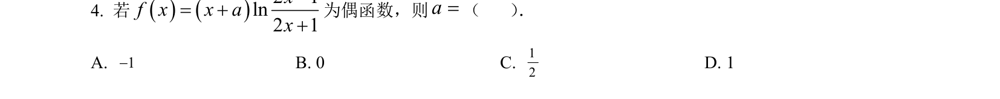
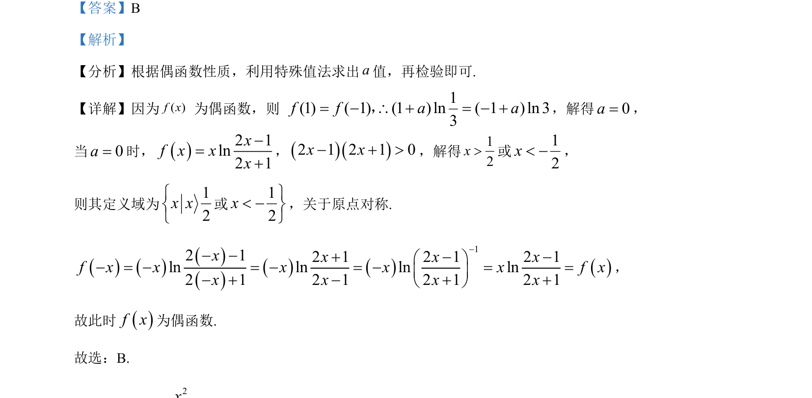

考点：偶函数性质 特殊值法 定义域对称性 对数运算

考查偶函数性质求参数，利用特殊值法及定义域对称性进行检验。

📄 原 PDF 第 2 页：
素材/真题/吉林/2008-2024·（吉林）数学高考真题/2023年高考数学试卷（新课标Ⅱ卷）（解析卷）.pdf
【答案】B 【解析】 【分析】根据偶函数性质，利用特殊值法求出a值，再检验即可. 【详解】因为( )f x 为偶函数，则 1(1) ( 1) (1 ) ln ( 1 ) ln 33f f a a= − \ + = − +，，解得0a=， 当0a=时，()2 1ln2 1xxxf x−=+ ，()()2 1 2 1 0x x− + >，解得12x>或12x< −， 则其定义域为12x xìíî 或12xü< −ýþ ，关于原点对称. ()()()()()()()12 12 1 2 1 2 1ln ln ln ln2 1 2 1 2 1 2 1f xx x x xxx x xfx x x xx−− −+ö− = −− −æ= = = =ç ÷− + − + +è−ø− ， 故此时()f x为偶函数. 故选：B.